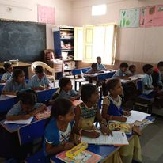

We have provided 30 units of desks and benches to Govt. primary school Subhashnagar ,Secundrabad. As we complete our 10th project this initiative has take firm roots possible by generous contributions from many. This reach out needed to be addressed and has brought great relief to the school and the students. Their happiness knows no boundaries and each student is extremely grateful to HFHS ALUMNI.
Children benefitting greatly from HFHS Giving Privilege's generosity. They look a lot more focused using the benches and tables and have a better opportunity for education.